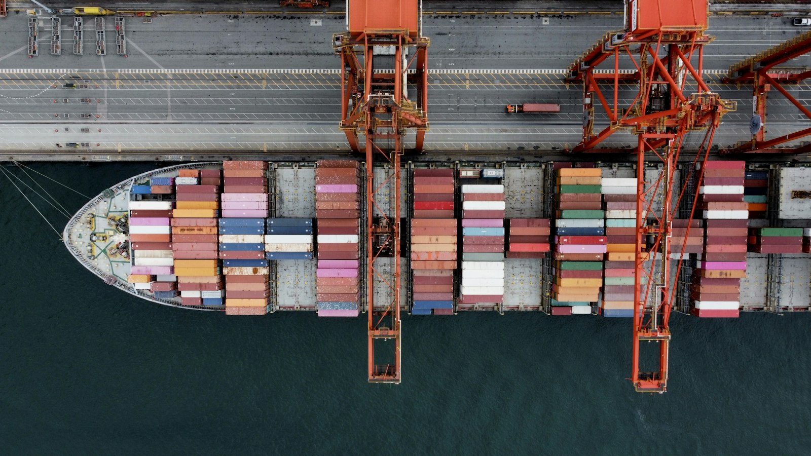
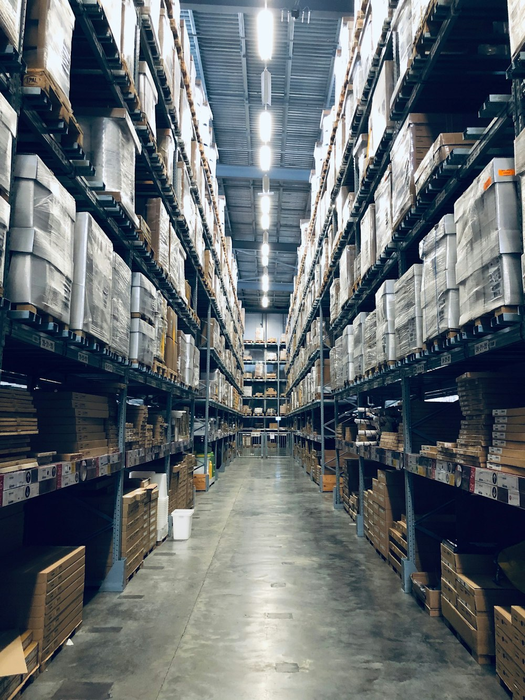

Fresh connections.
Lasting partnerships.
Connecting produce origins with market needs through thoughtful sourcing, clear communication, and coordinated logistics.
Good produce deserves
a dependable partner.
From product specifications to shipment handoffs, TopChain Fresh brings sourcing, trade coordination, and logistics into one connected conversation.
How we workBuilt around your supply chain.
Clear requirements. Considered sourcing.
Attention to the details that move trade forward.

Products with a market in mind.
Explore fruit and vegetable categories, then discuss grade, packing, origin, and timing.
View product range ↗
Connections that keep trade moving.
Bring supplier relationships, commercial requirements, and shipment documentation together.
Explore trading ↗
Care at every handoff.
Coordinate handling, temperature requirements, routing, and delivery expectations.
Our logistics approach ↗
The right questions.
A clearer path forward.
A useful sourcing conversation starts with the details. Tell us what you need and where it needs to go.
- Product & specification
Variety, grade, size, maturity, and packing. - Origin & destination
Supply preferences and delivery market. - Volume & timing
Shipment quantity, delivery window, and frequency.
Experience informs.
Technology advances.
Exploring practical ways to improve forecasting, traceability, and everyday workflows—grounded in the realities of produce trading.
Explore our innovation direction ↗